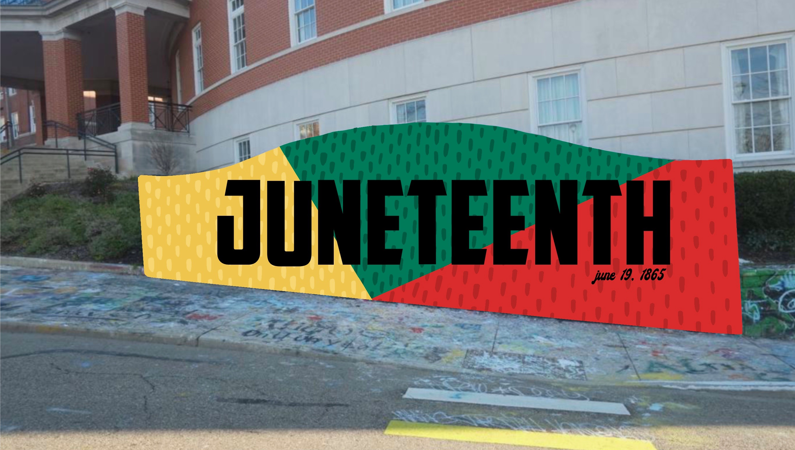
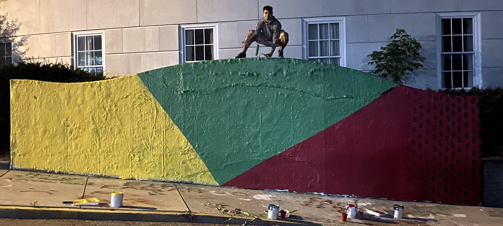
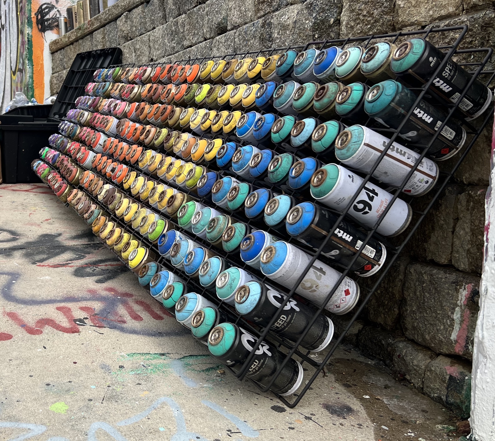

Paint
Preparing Your Design
Depending on the mural, you can trace your design on your “fresh canvas”. This ensures that your proportions will be correct and for beginners, it makes the painting process quicker.

There are three walls for you to choose from. They are different in size and shape. Use the descriptions below to determine which wall will best fit your goal and if you are ambitious, you could do all three!
Creating a design before you show up to paint is key to having a good experience. This will allow you to buy the proper amount of materials and make the excecution seamless.
Before you paint your design, you will want to give the wall a coat of paint as your background color. This gives you a fresh canvas to work on. Pro tip: make sure to paint the beveled edge on the wall, as this makes your design look professional.
Expect to use 1 gallon of paint per wall.
Use roller heads for rough surfaces and it helps to have a roller extender on hand for those hard to reach spots!
To paint your design, you can spray paint, brush paint, or do a combination of both.
If you choose to use spray paint, avoid generic brands and use high-end spray paint like Montana Gold WITH interchangeable caps.
If you choose to brush paint, make sure your paint is acrylic based as it is one of the most durable and weather resistant
Even the most professional grafitti artists can end up with drops of paint on their clothes. It is recommended that you wear old clothing and shoes in case of accidents or drips!
Spray paint contains harsh chemicals so you will want to wear a paint respirator to protect you and your lungs.
The weather must always be a part of your grafitti wall plan. If it is hot and sunny, make sure you wear a hat and sunscreen. If it is cold, it is recommended that you wear gloves to keep your fingers warm. Pro-tip: bring a small space heater to keep your paint warm. Finally, if it is raining...go home, painting in the rain is impossible.
Items that are extremely helpful on painting day but are often overlooked include paper towels, water/snack, and a speaker for music.
Bringing these additional items will make your experience enjoyable and you can dance while you paint!
 Depending on the mural, you can trace your design on your “fresh canvas”. This ensures that your proportions will be correct and for beginners, it makes the painting process quicker.